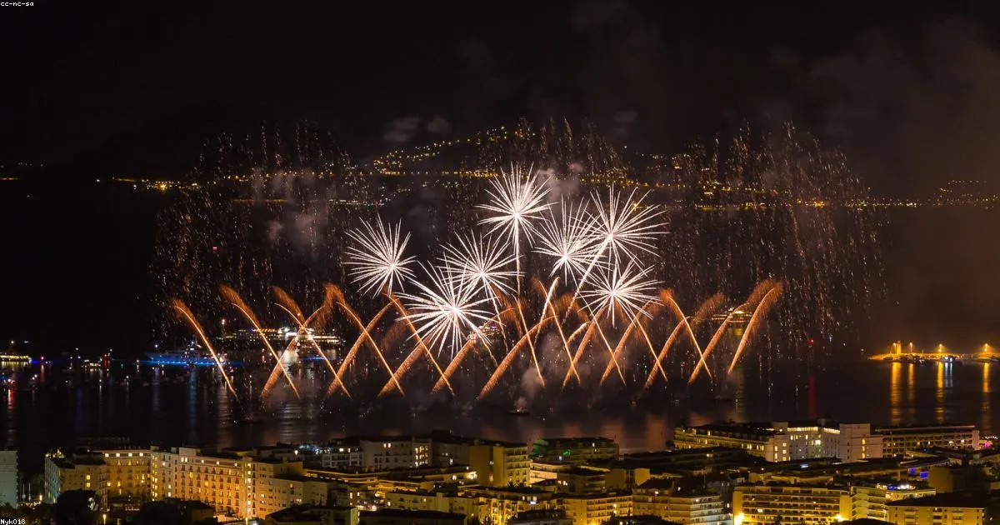

El Sistema Eléctrico Náutico: Mucho más que Cables
Cuando alguien compra una embarcación, normalmente piensa en el motor, en el casco, en la tapicería. El sistema eléctrico raramente está en las primeras prioridades. Pero en Cartagena —con humedad relativa promedio del 85%, salinidad del agua en 36 g/L y temperaturas de 28-30 °C durante todo el año— el sistema eléctrico es uno de los componentes que más rápidamente se deteriora y el que genera más emergencias en alta mar.
El 30% de los incendios en embarcaciones de recreo a nivel mundial tienen origen eléctrico (NFPA). En el ambiente marino del Caribe colombiano, ese porcentaje puede ser aún mayor: la humedad crea puentes de conducción eléctrica entre cables mal aislados, el salitre corroe terminales en semanas, y las vibraciones del motor sueltan conexiones que a tierra nunca fallarían.
El Estándar ABYC E-11: El Marco de Referencia
El ABYC (American Boat and Yacht Council) publica estándares técnicos voluntarios para embarcaciones de recreo que son reconocidos internacionalmente. El estándar E-11 regula específicamente los sistemas eléctricos de corriente continua (CC) y corriente alterna (CA):
Principales Requisitos ABYC E-11
Cables y Calibres
- □ Cable de cobre estañado BC5W2/BC6W2
- □ Calibre mínimo según corriente y longitud
- □ Caída de voltaje máxima 3% (equipos críticos)
- □ Conductores positivos en rojo, negativos en amarillo
- □ Etiquetado cada 24 pulgadas en cables ocultos
Protecciones
- □ Fusible o disyuntor en cada circuito positivo
- □ Protección ubicada lo más cerca posible de la fuente
- □ Disyuntores de restablecimiento manual en circuitos críticos
- □ Distancia máxima sin protección: 7 pulgadas desde batería
- □ GFCI obligatorio en circuitos CA de 120V
12V vs 24V: ¿Qué Sistema es Mejor para tu Embarcación?
Esta es una de las preguntas más frecuentes. La respuesta depende del tamaño y uso de la embarcación:
| Característica | Sistema 12V | Sistema 24V |
|---|---|---|
| Embarcaciones ideales | Hasta 35-40 pies | 40+ pies, alto consumo |
| Costo inicial | Menor | Mayor |
| Calibre de cable necesario | Mayor calibre | Menor calibre = menor peso |
| Disponibilidad componentes | Alta (compatible con auto) | Más especializado |
| Eficiencia en distancias largas | Mayor pérdida de voltaje | Menores pérdidas |
Materiales: La Diferencia entre Durar 1 Año o 10 Años
Este es el aspecto donde más errores se cometen en instalaciones náuticas en Colombia. Usar materiales domésticos o automotrices en una embarcación es un error costoso:

❌ Lo que NO usar en una embarcación
- Cable doméstico THW o THHN: Aislamiento no marino, se endurece y resquebraja con vibración. Los conductores de cobre sin estañar se corroen en meses.
- Cable automotriz: Mejor que el doméstico, pero el cobre sin estañar sigue siendo vulnerable al salitre.
- Conectores crimp estándar (rojos/azules/amarillos): Sin sellado. La humedad entra por la contracción y expansión térmica y corroe la conexión.
- Fusibles de auto: No diseñados para ambiente marino, pueden no disparar en condiciones de humedad extrema.
✅ Materiales marinos correctos
- Cable BC5W2 / BC6W2: Cada hilo de cobre estañado individualmente. Cumple ABYC E-11 y UL 1426. Resistente a combustibles, aceite, agua y vibración.
- Conectores adhesivo-sellados (heat shrink con adhesivo): Al termo-contratar, el adhesivo interior sella completamente la conexión contra humedad.
- Disyuntores Blue Sea Systems o Carling: Certificados marinos, con protección contra corrosión y vibración.
- Sellador 3M 5200 o 4200 para penetraciones de casco: Impermeabilización permanente o semipermanente en puntos de entrada de cable.
Energía Solar en el Caribe: Independencia Real en Fondeo
Cartagena y el archipiélago de las Islas del Rosario tienen más de 2,800 horas de sol al año. Un panel solar bien instalado puede cambiar completamente la experiencia de fondeo: nevera funcionando durante días, dispositivos cargados, luces encendidas toda la noche sin necesidad de prender el motor o el generador.
Ejemplo de sistema solar para yate de 38 pies en fondeo (Islas del Rosario)
Consumo diario estimado:
- Nevera 12V (50L): 40 Ah/día
- Iluminación LED (6h): 6 Ah/día
- Electrónica (VHF, plotter): 8 Ah/día
- Celulares y tablet: 5 Ah/día
- Total: ~59 Ah/día
Sistema solar recomendado:
- 1× panel 200W (14 Ah/h con 5h pico sol)
- Generación: ~70 Ah/día promedio
- Controlador Victron SmartSolar MPPT 75/15
- Banco de baterías 200Ah AGM o 100Ah LiFePO4
- Autonomía: indefinida en fondeo
Los 7 Errores más Comunes en Instalaciones Eléctricas de Embarcaciones
Estos son los problemas que encontramos con más frecuencia cuando diagnosticamos embarcaciones en Cartagena:
- 1. Cable sin estañar (no marino). El error más común y el más peligroso. El cobre se oxida en meses creando resistencia, calor y eventualmente incendio. Solución: reemplazar con BC5W2.
- 2. Conexiones sin sellar. Empalmes pelados o conectores sin adhesivo que acumulan humedad. Se corroen en semanas. Solución: conectores sellados con adhesivo termofusible.
- 3. Fusibles del tamaño incorrecto. Fusibles sobredimensionados (o peor, sin fusible) que no protegen el cable. Si el cable se calienta y el fusible no dispara, el resultado es un incendio.
- 4. Cables sin identificar. Imposible hacer mantenimiento o diagnóstico. Un cable cortocircuitado en un mazo sin identificar puede tardar días en encontrarse. Solución: etiquetado con termoretráctil impreso.
- 5. Cables rozando bordes metálicos. La vibración del motor desgasta el aislamiento contra marcos de aluminio o acero. Una rozadura puede crear un cortocircuito a tierra. Los cables deben ir fijados con abrazaderas de PVC cada 12-18 pulgadas.
- 6. Sin separación entre circuitos de bilge pump y circuitos normales. La bomba de sentina debe tener su propio circuito directo desde la batería, sin pasar por el interruptor principal, para que funcione incluso si alguien apaga todo.
- 7. Mezclar masas (negativo) de diferentes sistemas. Conectar el negativo del sistema de CA (shore power) al mismo bus que el CC puede crear corrientes galvánicas que destruyen hélices, eje y partes metálicas del casco sumergidas.
¿Cuándo Llamar a un Especialista?
Llama a un especialista en electricidad náutica si detectas alguno de estos síntomas:
- Disyuntores que saltan repetidamente (indica sobrecarga o cortocircuito)
- Olor a quemado cuando se encienden algunos equipos
- Baterías que se descargan rápido incluso con poco uso
- Equipos que funcionan de forma intermitente
- Cables con aislamiento resquebrajado o decolorado
- Terminales con corrosión verde/blanca visible
- El voltímetro del tablero muestra caídas bruscas al encender equipos
¿Necesitas Diagnóstico Eléctrico en Cartagena?
En Colombia Boat Detailing hacemos diagnóstico eléctrico completo con informe escrito. Si detectamos problemas, te cotizamos la solución en el mismo momento.
Solicitar DiagnósticoEquipo Colombia Boat Detailing
Especialistas en electricidad náutica y protección de embarcaciones en Cartagena